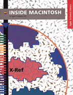

Inside Macintosh: X-Ref
Inside Macintosh: X-Ref provides a quick and easy way to find the exact information you need in the Inside Macintosh series, the essential resource for Macintosh programmers, engineers, and designers. It provides a complete combined index of all the Inside Macintosh books, including- Overview
- Macintosh Toolbox Essentials and More Macintosh Toolbox
- Files, Memory, Processes, and Operating System Utilities
- Text
- Imaging With QuickDraw
- Interapplication Communication
- Networking
- Devices
- QuickTime, QuickTime Components, and Sound
- QuickDraw GX Library
- AOCE Application Interfaces and AOCE Service Access Modules
- PowerPC System Software and PowerPC Numerics
Availability: Click below to obtain Inside Macintosh: X-Ref in any of the following formats.

|
Printed |

|
Acrobat (3.4 MB) |